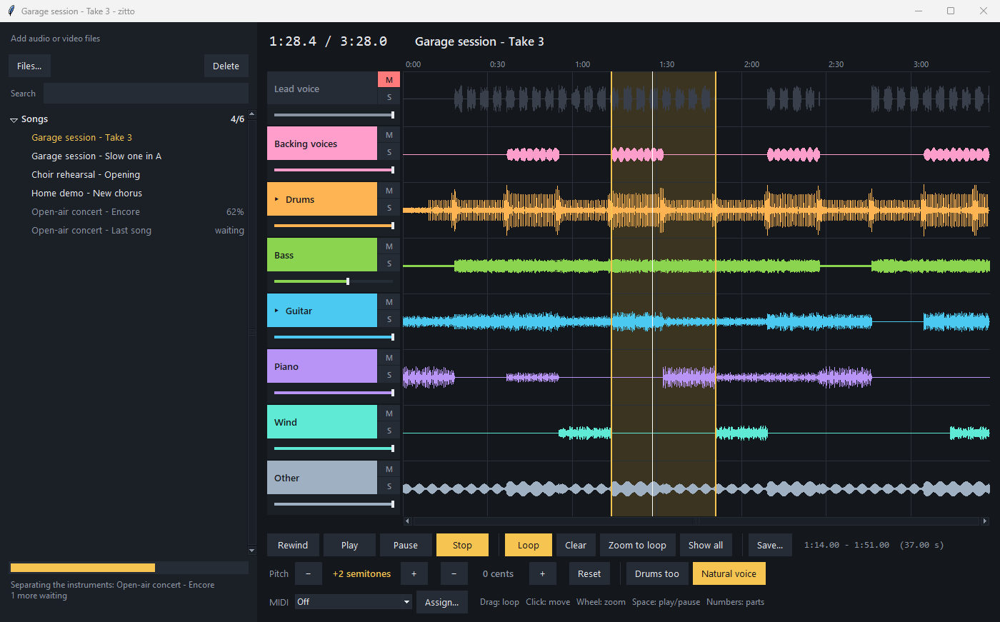
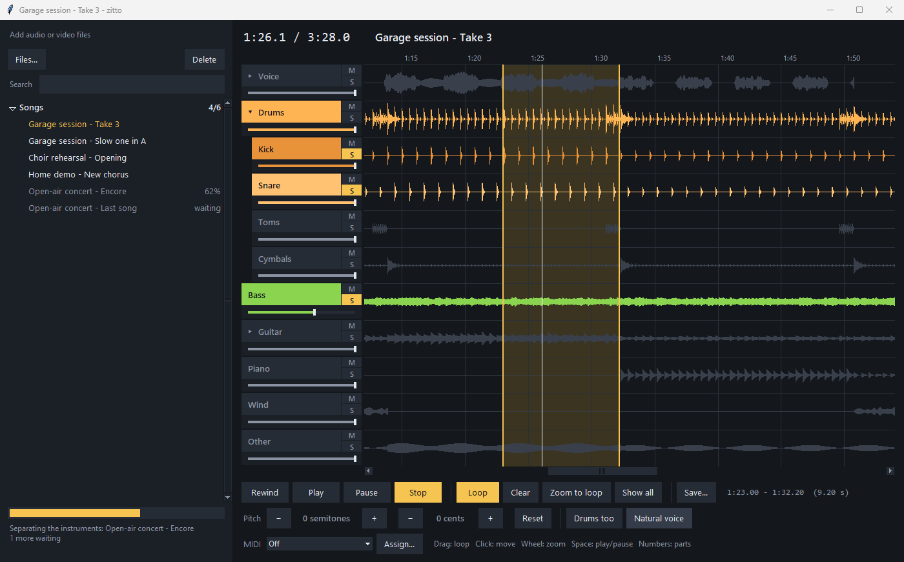

zitto
Separates a song into its parts, plays it with each part switched on and off live, and saves the mix you hear. In Italian, zitto means hush.

The parts of a song
- Voice
Muted, to sing it yourself. It opens into lead and backing, so the choir can stay.
- Drums
They open into kick, snare, toms and cymbals.
- Bass
Each part has its own volume.
- Guitar
Muted, to play it yourself. It opens into acoustic and electric.
- Piano
Soloed, to work out the chords.
- Wind
Sax, flute and brass.
- Other
Everything else. All the parts together are the original.

Made for practising
Drag on the waveform to repeat a passage. Zoom with the wheel, mute parts with the number keys, and save the result as MP3, FLAC or WAV.
Raise or lower the key while it plays. The speed does not change, nor do the drums, and voices keep their timbre. Save it in the new key.
Close it whenever you like. The next time the song is as you left it.
Hands on the instrument
Play, Pause, Stop and Rewind answer to a MIDI pedal or controller. Transport messages work at once. For any other button press Learn, then the button.

Install
Windows, with Python 3.12 in C:\Python312 and ffmpeg on the PATH. An NVIDIA card makes it much faster. Get the source from GitHub, then run:
.\setup.bat .\window.bat
On a Mac with Apple Silicon, open the dmg of the latest release. The first time, macOS has to be told to open it: see the README.
Songs stay on your computer. The internet is only needed to install, and to download the models the first time.
The models
zitto does not include them. Each is downloaded from its own source the first time it is needed.
| Model | Finds | Size | Terms |
|---|---|---|---|
| BS-Roformer-SW | voice, drums, bass, guitar, piano | 699 MB | unknown |
| Mel-Roformer Karaoke (becruily) | lead and backing voices | 1719 MB | not stated |
| MDX23C DrumSep | kick, snare, toms, cymbals | 438 MB | not stated |
| MVSep Mega 53 Stems | acoustic and electric guitar | 78 MB | not stated |
| UVR 17_HP-Wind_Inst | wind | 224 MB | MIT, with credit to UVR |
The author of BS-Roformer-SW is unknown, and those of the karaoke, drum and guitar models do not say how they can be used. zitto can use only models with stated terms instead, with lower quality, without guitar, piano and the pieces of the drums: the README explains how.
The separation is an estimate. Traces of a part can remain in the others.
Terms
Free for any non-commercial use, under the PolyForm Noncommercial License 1.0.0. Selling it is not allowed.
Use it with recordings that you made, or that you have the right to use in this way. Separating a song gives no right on it.